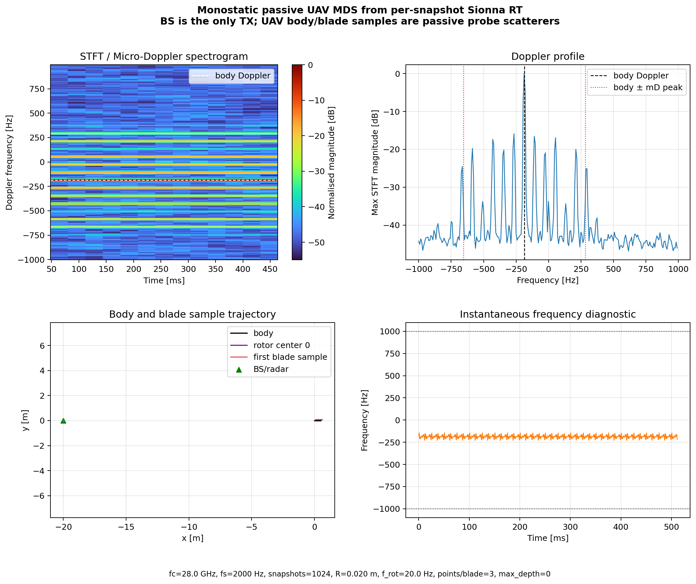

文件夹：monostatic_passive_uav_mds/；用途：解释程序结构、物理模型、代码分段、输出图和验证方法。
这个文件夹的目标是验证一种更接近雷达语义的 UAV 微多普勒数据生成链路：不再把叶片点当作主动发射机，而是让 BS/Radar 作为唯一发射机，UAV 只是被动散射目标。程序每隔一个 snapshot 更新时间，机身向前平动，旋翼中心跟随机身移动，叶片上的多个散射点绕旋翼中心做圆周运动，然后重新调用 Sionna RT 求解一程传播路径。
| 路径 | 作用 | 为什么需要 |
|---|---|---|
rt_monostatic_passive_uav_mds.py |
主程序。创建 Sionna 场景，计算 UAV 散射点轨迹，逐帧运行 PathSolver，生成单基地被动回波，并输出 MDS 图和数据。 |
这是整个实验链路的核心。 |
validate_monostatic_passive_uav_mds.py |
自动验证脚本。检查几何位置、STFT 输出、理论 Doppler、一致性、相位连续性和四个消融实验。 | 防止图看起来像对了，但模型或频率轴实际错了。 |
outputs/figures/ |
保存图像，目前包含默认 MDS 结果图。 | 用于组会展示和人工检查。 |
outputs/data/ |
保存 .npz 数据，包括复信号、STFT、散射点轨迹、理论频率和路径统计。 |
后续可以复现实验、画新图、做进一步分析。 |
outputs/logs/ |
保存 summary 和 validation report。 | 记录关键参数、理论值、实测值和验证结果。 |
旧的逐帧 RT 脚本通常把叶片点建成 Transmitter，再让 radar 作为 Receiver 接收，这本质上是一程通信链路。这里改成：场景中只有一个 Transmitter，也就是 BS/Radar；UAV 上的机身点和叶片散射点只是 probe Receiver，用于测量 BS 到该散射点的一程复信道。
平方 h_k(t)^2 的意义是：如果 BS 到散射点的一程相位是 exp(-j·2πR/λ)，单基地往返相位就是 exp(-j·4πR/λ)。因此平方可以把一程相位和一程路径损耗变成往返相位和往返路径损耗。
机身位置按匀速模型更新，旋翼中心是机身位置加固定偏移，叶片散射点再绕旋翼中心旋转。最终每个叶片点的绝对位置是三部分相加。
这里 points_per_blade=3，所以每片叶片不是只取叶尖一个点，而是沿半径方向取 3 个点。四旋翼、每个旋翼 2 片叶片，因此叶片散射点数为 4 × 2 × 3 = 24，加上机身点，一共 25 个散射体。
PassiveUavMdsConfig 是主程序的参数中心。它把场景、采样率、载频、BS 位置、机身速度、旋翼结构、STFT 参数、输出路径都放在一个 dataclass 里。
class PassiveUavMdsConfig:
scene = "floor_wall"
snapshots = 1024
fs = 2000.0
fc = 28e9
body_speed = 1.0
blade_radius = 0.02
rotation_freq = 20.0
points_per_blade = 3
这个类还提供派生量，例如波长 wavelength、采样时间 t_vec、Nyquist 频率、机身速度向量、散射体数量、STFT 频率分辨率等。这样后面的代码不用反复手算这些值。
parse_args() 定义命令行参数，例如 --body-speed、--rotation-freq、--blade-weight。这使同一个程序可以跑默认实验，也可以跑消融实验。
python monostatic_passive_uav_mds/rt_monostatic_passive_uav_mds.py \ --rotation-freq 0 --no-noise
上面这个命令就是“无旋转”消融实验，用来确认没有旋翼运动时 MDS 不会出现微多普勒展宽。
scatterer_state(cfg, t) 是几何建模的核心。给定时间 t，它返回所有散射点的位置、速度、权重、标签、所属旋翼和半径。
body_pos = body_position(cfg, t) rotor_centers = body_pos[np.newaxis, :] + rotor_offsets blade_point = rotor_center + [rho*cos(angle), rho*sin(angle), 0]
scatterer_trajectories(cfg) 则把所有时间点的 scatterer_state 堆叠起来，得到完整轨迹张量。验证脚本会用它检查机身是否真的平动、旋翼中心是否真的跟随机身、叶片点半径是否保持不变。
theory_metrics(cfg) 根据散射点速度和视线方向估计理论频率范围。机身平动给出 body Doppler，叶片转动给出 micro-Doppler peak。
默认实验中，理论 body Doppler 为 -186.796 Hz，理论 micro-Doppler peak 为 469.468 Hz，因此预期 MDS 主要分布在 [-656.264, 282.672] Hz 附近。
setup_scene(cfg) 加载 Sionna 内置场景，设置频率和天线阵列，然后只添加一个 Transmitter(name="bs_radar")。所有 UAV 散射点都添加为 Receiver，命名为 probe_00_body、probe_01_rotor0_blade0_... 等。
scene.add(Transmitter(name="bs_radar", position=cfg.bs_position)) scene.add(Receiver(name="probe_00_body", position=body_pos)) scene.add(Receiver(name="probe_01_rotor0_blade0_rho...", position=blade_pos))
run_simulation(cfg) 中的循环是逐 snapshot 路线的核心。每一帧先更新所有 probe receiver 的位置，再调用 PathSolver，然后从 CIR 中求出每个散射点的一程复信道。
for idx in range(cfg.snapshots):
update_probe_positions(scene, probe_names, positions[idx])
a = run_solver(scene, solver, cfg)
h = one_way_channels_by_rx(a, cfg.n_scatterers)
signal_clean[idx] = monostatic_return(h, weights)
这一步比后处理调制慢得多，因为默认 1024 帧会运行 1024 次 PathSolver。但它的好处是每个 snapshot 的几何位置都真实进入了 Sionna RT。
monostatic_return() 对每个散射点执行 weight_k * h_k * h_k，并把所有散射点相干求和。然后程序可选加入 AWGN，最后用 compute_spectrogram() 做复数 STFT。
return complex(np.sum(weights * one_way_h * one_way_h))
STFT 使用 Hann 窗、双边频谱和 fftshift，因此频率轴是零中心 Doppler 频率轴。默认 stft_win=256、fs=2000 Hz，频率分辨率为 7.8125 Hz。
save_outputs() 统一保存三类产物：压缩数据 .npz、结果图 .png 和 summary 文本。数据文件中包含复信号、干净信号、STFT、散射点位置、速度、理论频率、路径统计和配置 JSON。
validate_monostatic_passive_uav_mds.py 的作用不是重新生成正式图，而是用较小规模参数自动验证关键物理和数值性质。
| 测试函数 | 检查内容 | 意义 |
|---|---|---|
test_geometry() |
检查 body(t)=body0+Vt，旋翼中心跟随机身，叶片点半径保持等于指定 rho。 |
证明父子运动关系正确。 |
test_stft_output() |
检查频率轴单调、零中心、S_dB shape 正确、最大值归一到 0 dB。 |
证明 MDS 频率轴和矩阵维度可靠。 |
test_default_rt_signal_and_doppler() |
检查信号非零有限，STFT 主峰接近理论 body Doppler，误差不超过一个频率 bin。 | 证明 standard Doppler 位置正确。 |
test_phase_continuity() |
对无噪声信号 unwrap 相位，检查相邻相位差没有非物理尖峰，瞬时频率不超过 Nyquist。 | 证明相干相位没有明显断裂或混叠。 |
test_ablations() |
运行无旋转、无机身平动、关闭叶片、关闭机身四个消融实验。 | 证明谱图结构来自对应物理机制，而不是偶然图案。 |
geometry、stft_output、default_rt_signal_and_doppler、phase_continuity、ablations 全部通过。

横轴是时间，纵轴是 Doppler 频率，颜色表示归一化 STFT 幅度。白色虚线表示理论机身 Doppler，白色点线表示理论展宽范围。默认实验中，机身 Doppler 约为 -186.8 Hz，旋翼产生约 ±469.5 Hz 的微多普勒展宽。
这个子图把 MDS 沿时间方向取最大值，显示整个观测期间出现过的频率能量。它用于检查 STFT 主峰是否接近理论 body Doppler，以及能量展宽是否落在理论范围附近。
该图显示 BS/Radar、机身轨迹、一个旋翼中心轨迹和第一个叶片散射点轨迹。它直观展示：机身向前平动，旋翼中心跟随机身，叶片散射点在局部圆周运动的同时整体跟随机身移动。
该图对干净复信号做相位解缠并求导，展示瞬时频率诊断。它不是最终分类特征，而是用于检查相位是否连续、是否接近 Nyquist 边界、是否出现异常跳变。
| 指标 | 当前值 | 解释 |
|---|---|---|
| 场景 | floor_wall | 使用 Sionna 内置简化地板/墙体场景，默认 max_depth=0，平均路径数为 1。 |
| 载频 / 波长 | 28 GHz / 10.707 mm | 毫米波频段，微多普勒对速度更敏感。 |
| snapshot / fs | 1024 @ 2000 Hz | 逐帧重跑 RT，共 1024 个复信号采样点。 |
| STFT 窗长 / 频率分辨率 | 256 / 7.81 Hz | 主峰验收误差使用这个 frequency bin 作为尺度。 |
| 散射点数 | 25 | 1 个机身点 + 4×2×3 个叶片径向散射点。 |
| 理论 body Doppler | -186.796 Hz | 机身整体平动产生的 standard Doppler。 |
| 理论 micro-Doppler peak | 469.468 Hz | 叶片散射点旋转速度投影产生的最大展宽。 |
| 理论支持范围 | [-656.264, 282.672] Hz | 约等于 body Doppler ± micro-Doppler peak。 |
| STFT 主峰 | -187.500 Hz | 与理论 body Doppler 的误差约 0.704 Hz，小于一个 bin。 |
| STFT 支持范围 | [-671.875, 296.875] Hz @ -35 dB | 与理论范围接近，边界差异来自窗函数、谱泄漏和阈值。 |
| 运行耗时 | 75.25 s | 逐帧 PathSolver 的代价，后续高精度参数会更慢。 |
| 验证报告 | ALL TESTS PASSED | 几何、STFT、Doppler、相位连续性和消融实验均通过。 |
python monostatic_passive_uav_mds/rt_monostatic_passive_uav_mds.py
默认会运行 1024 个 snapshot，生成正式的 MDS 图、数据和 summary。这个命令比较慢，因为会重跑 1024 次 PathSolver。
python monostatic_passive_uav_mds/rt_monostatic_passive_uav_mds.py \ --snapshots 64 --fs 2000 --stft-win 32 --no-noise --max-depth 0
用于快速确认脚本是否能跑通。它生成的谱图时间长度较短，不适合作为最终展示图。
python monostatic_passive_uav_mds/validate_monostatic_passive_uav_mds.py
该命令会自动运行几何、STFT、Doppler、相位连续性和消融实验测试，并把结果写入 outputs/logs/validation_report.txt。
| Case | 命令 | 预期现象 |
|---|---|---|
| A：无旋转 | --rotation-freq 0 --no-noise |
MDS 不应出现明显 micro-Doppler 展宽，只保留机身 Doppler 附近稳定分量。 |
| B：无机身平动 | --body-speed 0 --no-noise |
MDS 主要围绕 0 Hz 展宽。 |
| C：关闭叶片散射 | --blade-weight 0 --no-noise |
MDS 只剩机身 standard Doppler 水平线。 |
| D：关闭机身散射 | --body-weight 0 --no-noise |
机身 Doppler 线显著减弱，旋翼 micro-Doppler 分量更突出。 |
h_k(t)^2 构造往返回波，但还不是完整叶片网格的高保真电磁散射，也没有引入真实叶片 RCS 随角度、极化、材料和遮挡变化的模型。
当前模型适合做三件事：第一，验证“机身平动 + 旋翼相对运动”的父子几何关系；第二，验证单基地往返相位和 Doppler 频率是否与理论一致；第三，为后续完整叶片网格、RCS 标定和更复杂多径场景提供一个可工作的基线。
w_k(t)=w_0|cos(α_k(t))|^p。max_depth > 0，研究地面/墙体/建筑物多径对 MDS 的影响。R=0.15 m、f_rot=100 Hz、fs=50 kHz，但需要接受逐帧 RT 的长耗时。说明书生成说明：本 HTML 使用纯本地 CSS 和相对图片路径，不依赖外部网络资源；可直接用 WeasyPrint 转为 PDF。